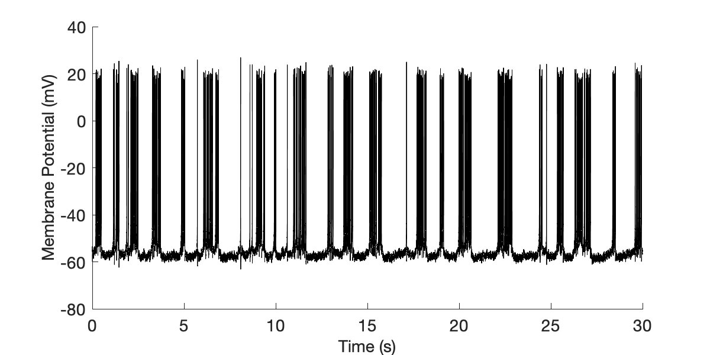
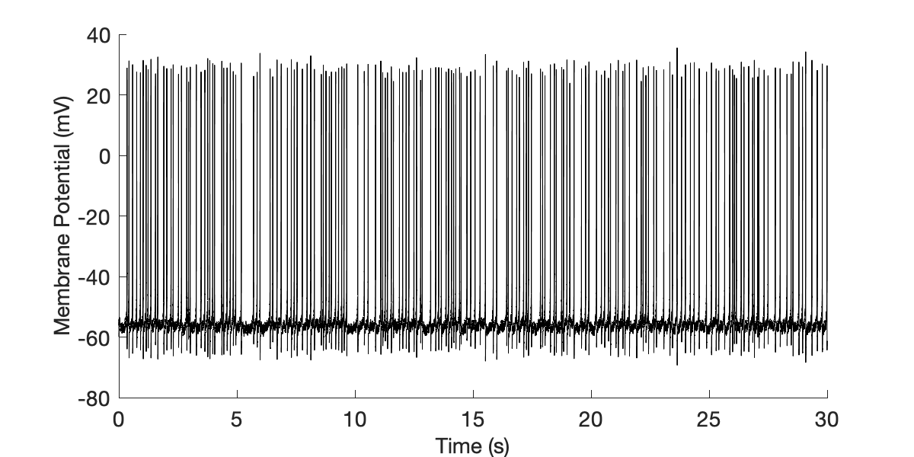
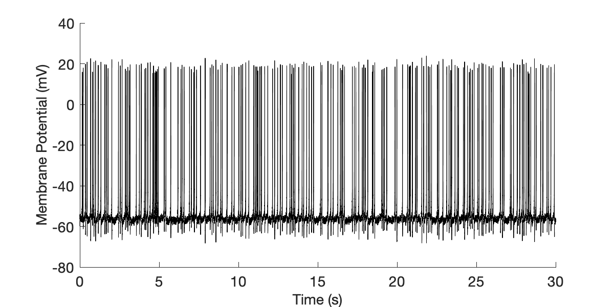

This is the README for the following article: Ionic mechanisms underlying tonic and burst firing behavior in subfornical organ neurons: a combined experimental and modeling study Laura Medlock, Lauren Shute, Mark Fry, Dominic Standage, and Alastair V. Ferguson Journal of Neurophysiology 2018 120:5, 2269-2281 URL: https://journals.physiology.org/doi/full/10.1152/jn.00340.2018 DOI: https://doi.org/10.1152/jn.00340.2018 ABSTRACT: Subfornical organ (SFO) neurons exhibit heterogeneity in current expression and spiking behavior, where the two major spiking phenotypes appear as tonic and burst firing. Insight into the mechanisms behind this heterogeneity is critical for understanding how the SFO, a sensory circumventricular organ, integrates and selectively influences physiological function. To integrate efficient methods for studying this heterogeneity, we built a single-compartment, Hodgkin-Huxley-type model of an SFO neuron that is parameterized by SFO-specific in vitro patch-clamp data. The model accounts for the membrane potential distribution and spike train variability of both tonic and burst firing SFO neurons. Analysis of model dynamics confirms that a persistent Na+ and Ca2+ currents are required for burst initiation and maintenance and suggests that a slow-activating K+ current may be responsible for burst termination in SFO neurons. Additionally, the model suggests that heterogeneity in current expression and subsequent influence on spike afterpotential underlie the behavioral differences between tonic and burst firing SFO neurons. Future use of this model in coordination with single neuron patch-clamp electrophysiology provides a platform for explaining and predicting the response of SFO neurons to various combinations of circulating signals, thus elucidating the mechanisms underlying physiological signal integration within the SFO. NEW & NOTEWORTHY: Our understanding of how the subfornical organ (SFO) selectively influences autonomic nervous system function remains incomplete but theoretically results from the electrical responses of SFO neurons to physiologically important signals. We have built a computational model of SFO neurons, derived from and supported by experimental data, which explains how SFO neurons produce different electrical patterns. The model provides an efficient system to theoretically and experimentally explore how changes in the essential features of SFO neurons affect their electrical activity. ------- This code was contributed by L Medlock. Running SFO_model.m in MATLAB will create Membrane Potential vs Time plots. You can modify all SFO channel properties as demonstrated in the associated publication to switch between burst and tonic firing regimes. Burst Firing: For values of gNa=150 & gK=100 (in mS/cm^2) we get burst firing, gKS ranges from 2-5mS/cm^2 depending on the burst regime (B1 vs B2).  Tonic Firing: To transition from burst firing to tonic firing you can: 1. Increase gNa from from 150mS/cm^2 to 170mS/cm^2.  2. Increase gK from 100mS/cm^2 to 280mS/cm^2. 